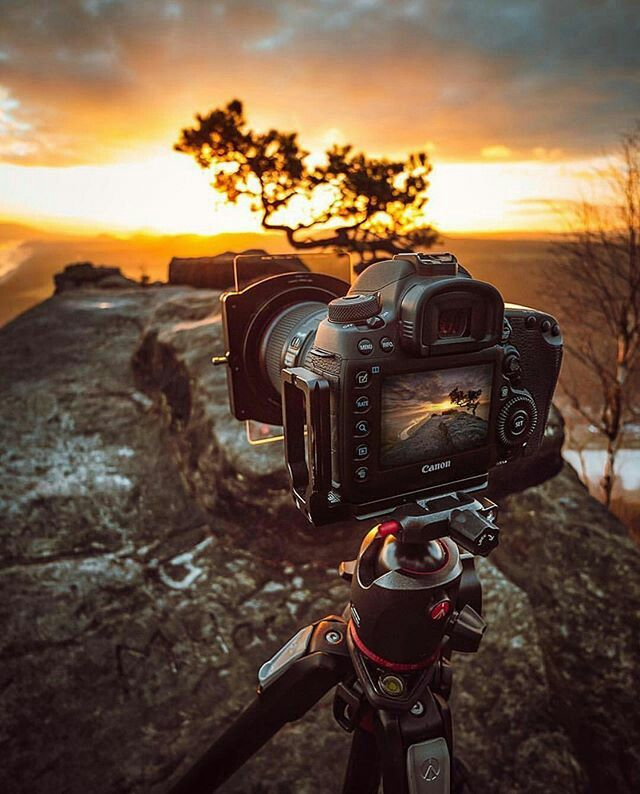

Acerca de Foto&VideoMX

Juan Pérez
Fotógrafo profesional con más de 15 años de experiencia en eventos sociales y familiares. Apasionado por capturar emociones y momentos únicos, combinando creatividad y técnica para ofrecer resultados excepcionales.
- Especialista en bodas, XV años y bautizos
- Equipo profesional de fotografía y video
- Edición avanzada y entrega digital/impresa
- Atención personalizada y trato amable